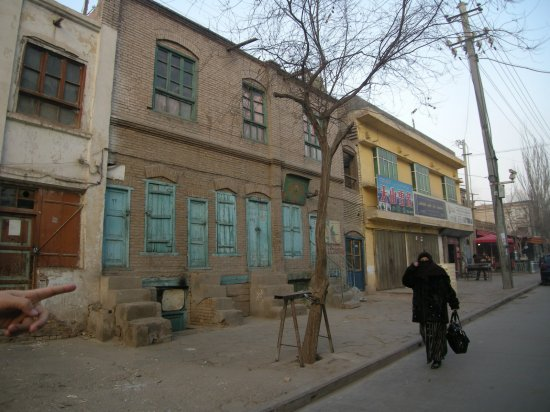
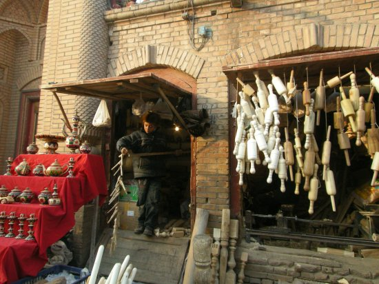

４．再びカシュガルへ（職人街編）
ここは、なぜ中国領土なの？

カシュガルは住民の85％がイスラム教徒のウイグル人で、
中国では珍しく、まだ漢民族が少ない都市です。

街の感じ
街の感じ
早朝から露天が多い
卵とナンを売ってました。
ナンはカシュガルの生活で欠かせないそうです。（ガイドのパリラさん）
お土産にと買ってくれました。
その他にもいろんな露天が
街中のモスク
卵売りの風景。 （後ろには小さなモスクが）

街中には、随所に小さなモスクが点在しています。
普段、異教徒はモスクの中へ入れないという事ですが、
日本からの旅行者という事で、特別にここへ入れてもらいました。
この絨毯の上でお祈りするそうです。
建物
この職人街には、古いカシュガルの建築が残っています

建物

建物
建物。 前には羊肉の串焼きが
その他
コート屋
干しプラム売り
ヨーグルト売り
ここは20年前にNHKの番組で取材された楽器屋だそうです。
（この店主は、その事を20年間日本人観光客に言い続けてるんやろうな・・）

麺伸ばし棒
石炭。 なんと塊で売ってました
裏路地へ
親子
子供
ガイドのパリラさんと
裏道
裏道。（パリラさんと私の影）
駄菓子屋風の店と、長距離公衆電話(やっぱり中国？)
子供も元気

チョッキと装飾品の店？
本業はお茶屋さんなんです
ナンを買って帰るご婦人。（フルフェイスですね）
左側のご婦人はマイバケツにジャガイモ。右側はフルフェイス。
少女。 顔にレンズの反射がかかって残念・・
ご婦人
みやげ物屋
ムナジャット手工業記念品店
金属のつぼが多い。（左上はなぜか？セーラー服）
金属の装飾品
楽器
いろいろ考えた末、買ってしまいました。
このお店で、
銅製のやかんを買いました。(１個2,500円也)
袋に入れてもらっているところ
銅製品は職人さんが手作りしてます
こんな大きいポットはどう使うのか？
次に、お目当ての絨毯屋へ・・
前から一度、中央アジアの商人と絨毯の取引きをしてみたかったんです・・
いろいろ広げて見せてくれました
これを買いました。（羊と駱駝の混毛で15,000円）
こういうのって量産品ではない一点物ですよね？
別の店で、メッカのカーバ絨毯も買ってしまいました。（量産品、3千円）
※下に敷いてはいけないと注意されました。壁に掛けて鑑賞する絨毯です。
買い物が終わって食事へ・・
カシュガル料理の有名店だそうです。

中央の階段で２階へ
豪華な内装
中央アジアの雰囲気で溢れてました
正面の男性は運転手さん

フロアーリーダの女性のリーゼントがかっこいい
料理を待っている間
来ました、麺料理。 右の鉢はヨーグルト。混ぜては食べません(念の為)
そして、ピラフと羊肉の串(右上)
周りは地元の人で盛況
ここは、なぜ中国なの？
つづく・・
戻る